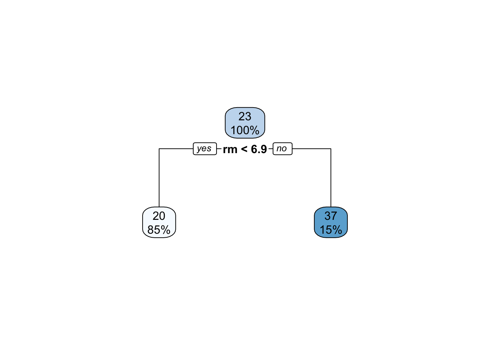
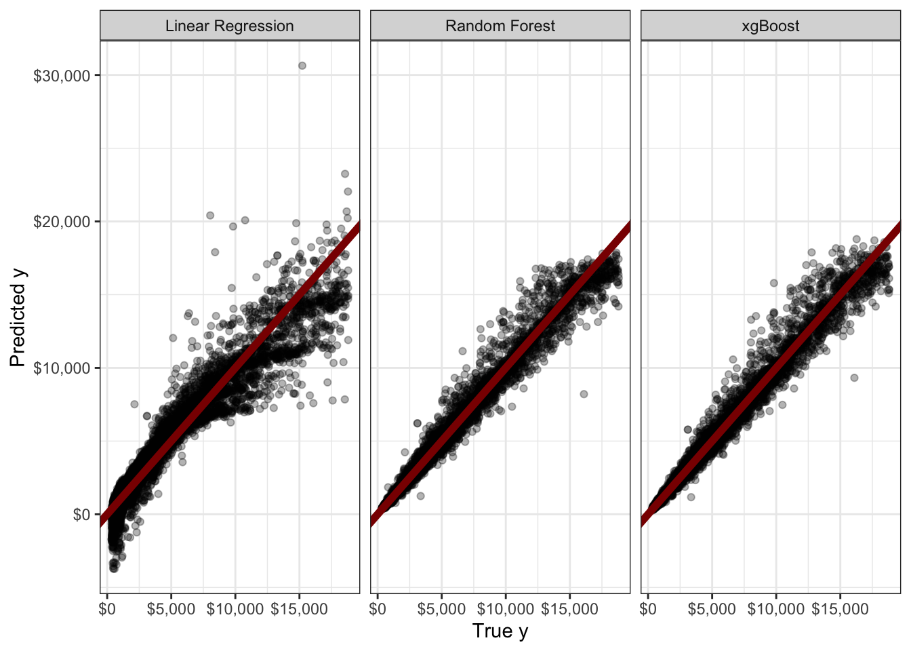

Notes for Lecture #18: Unit III. Classification & Ensemble Methods: Boosting
Outline:
Boosting
So “stack-’em-and-bag-’em” is a great pair of techniques for ensemble construction. Can we go further?
In both strategies, we have a set of base learners built more-or-less independently and are looking to combine them. This assumes that other learners can ‘make up’ for incorrect answers learned by one base learner. (Either through averaging or through a simple majority-vote scheme.) But this requires a bit of luck. Can we instead build an ensemble models that are designed to improve on each other?
This is the fundamental idea of boosting: given one learner, what if we fit another learner whose goal is not to predict \(y\) per se, but to fix where the prior learner went wrong? While boosting can be applied for both classification and regression (and was originally developed for classification), I find the math a bit more intuitive in the regression case.
Suppose we have a set of training data \((\bX, \by)\) and we fit a predictor \(\hat{f}_1\). We can construct a set of ‘first stage’ predictions
\[\hat{\by}_1 = \hat{f}_1(\bX)\]
and associated residuals
\[\hat{\br}_1 = \by - \hat{\by}_1.\] If we could predict \(\hat{\br}_1\) reasonably well, say with another function \(\hat{f}_2\), we could get better predictions by combining the two models together:
\[\hat{\by}_{1:2} = \hat{\by}_1 + \hat{\br}_1 = \hat{f}_1(\bX) + \hat{f}_2(\bX)\]
CautionWhy not Use \(\by\)?
You might ask why note fit \(\hat{f}_2\) to take \(\hat{\by}_1\) or \(\hat{\br}_1\) as inputs. We can’t use anything that depends on \(\by\) as inputs to any \(\hat{f}(\cdot)\) in the test (unknown \(\by\)) context.
At this point, your BS alarm should be going off. If it were possible to predict \(\hat{r}_1\) meaningfully in the first place, why didn’t our original \(\hat{f}_1\) do this? After all, we know from the gradient condition from OLS that:
\[\bX^{\top}(\by - \bX \hat{\bbeta}) = \bzero \implies \bx_j^{\top}\br = 0 \text{ for all } j = 1, \dots, p\]
so OLS leaves no linear relationship “on the table.” Many other models have similar guarantees, but not all!
As we have discussed throughout this course, we often pick models that don’t “go to the mattresses” and take on their most flexible forms (think \(K\)-NN with \(K > 1\): it’s not the ‘all out’ version of \(K\)-NN). If we pick a base learner with minimal fitting ability, it might leave something on the table.
So what is our laziest base learner? Let’s go back to our beloved trees and consider a tree with only a single split:
This type of minimal tree is often referred to as a stump in the ML community.1 Clearly, a stump is a very high-bias (inflexible) low variance learner. Even if we do not go all the way to a stump, shallow decision trees still form a good basis for boosting or iterative model improvement.
This gives us our basic Boosting-type algorithm:
- Initialize: \(\hat{f}_0(\cdot) = 0\) (constant predictor)
- For \(b = 1, \dots, B\):
- Compute residuals: \(\hat{\br}_b = \by - \hat{f}_{b-1}(\bX)\)
- Build new learner \(\tilde{f}_b\) on training data \((\bX, \hat{\br}_b)\)
- Update ensemble predictor: \[ \hat{f}_b(\cdot) = \hat{f}_{b-1}(\cdot) + \lambda \tilde{f}_b(\cdot) \Leftrightarrow \hat{f}_b(\cdot) = \sum_{i=1}^b \lambda\tilde{f}_b(\cdot)\]
Wait? What is this new \(\lambda\) term? It’s a form of regularization that we use to avoid overfitting. Instead of using all of the residual predictor we construct, we use a small fraction thereof. \(\lambda\) is typically chosen to be small, on the order of \(\lambda \approx 0.01\). The hope is that, by taking such small steps, and not running boosting ad infinitum we can identify a good boosted predictor.
CautionBoosting and Overfitting
In bagging scenarios, we can run \(B \to \infty\) without risk of overfitting because we are resampling data but still only fitting a model of limited capacity. The resampling only exists as a variance taming mechanism.
In boosting scenarios, running \(B \to \infty\) is a recipe for overfitting as we will continue to fit increasingly more complex models to capture more and more residual variance. It is important to have good data hygiene and use some sort of hold-out/cross-validation scheme to avoid overfitting.
At this point, you might recognize a bit of a gradient descent ‘flavor’ to boosting: we take small steps in a direction that further reduces our loss. This is not just a coincidence: as noted above, regression residuals are intimately tied to the gradient at a particular \(\hat{\beta}\). If we want to extend boosting to classification contexts, where residuals are not well-defined, one commonly used strategy (not surprisingly called gradient boosting) fits each successive base learner to the gradient of the loss function at each training point: that is, we fit the new base learner so that it pushes us “just a bit” in a direction that further minimizes the loss.
While other forms of boosting exist (AdaBoost, LogitBoost), gradient boosting is the most commonly used today. In particular, a software framework known as xgboost dominates the boosting landscape. xgboost - with the x standing for eXtreme - is not just the blue-raspberry flavor of machine learning. It uses small decision trees as the base learner, additionally using a random-forest feature randomization step to get some additional variability. The authors of xgboost have put significant effort into xgboost to make it as efficient as possible on a variety of computer architectures and have added many additionally useful features like automatic feature selection, a penalization scheme to downweight certain trees, and a Newton-like step instead of a simple gradient step for constructing the ensemble. See the official documentation for a more detailed discussion of these and the other powerful features of the xgboost library.
Like random forests, xgboost is also a widely used “nearly optimal” tool of choice for much applied predictive modeling and you are highly encouraged to familiarize yourself with it and add it to your toolbox.
Below, I demonstrate both random forests and xgboost to predict the price feature in the diamonds data you might have seen used to demonstrate ggplto2:
library(rsample)
library(tidyverse)
library(ranger) # Provides random forest
library(xgboost) # Provides xgboost
set.seed(9890)
split <- initial_split(diamonds, prop = 0.8)
train_diamonds <- training(split)
test_diamonds <- testing(split)
diamonds_lm <- lm(price ~ ., data=train_diamonds)
diamonds_rf <- ranger(price ~ ., data=train_diamonds)
# No formula interface
diamonds_xg <- xgboost(x = model.matrix(diamonds_lm), y=train_diamonds$price)
y_hat_lm <- predict(diamonds_lm, newdata=test_diamonds)
y_hat_rf <- predict(diamonds_rf, data=test_diamonds)$predictions
## Some awful magic to process test_diamonds into the expected format
## Ignore this!
diamonds_lm_terms <- diamonds_lm |> terms() |> delete.response()
m <- model.frame(diamonds_lm_terms, test_diamonds, xlev = diamonds_lm$xlevels)
diamonds_lm_X_test <- model.matrix(diamonds_lm_terms, m, contrasts.arg = diamonds_lm$contrasts)
y_hat_xg <- predict(diamonds_xg, newdata=diamonds_lm_X_test)
list(y=test_diamonds$price,
y_hat_lm=y_hat_lm,
y_hat_rf=y_hat_rf,
y_hat_xg=y_hat_xg) |>
bind_cols() |>
pivot_longer(cols=starts_with("y_hat"),
names_to="method",
values_to="prediction") |>
mutate(method = recode_values(method,
"y_hat_lm" ~ "Linear Regression",
"y_hat_rf" ~ "Random Forest",
"y_hat_xg" ~ "xgBoost")) |>
ggplot(aes(x=y, y=prediction)) +
geom_point(alpha=0.3) +
facet_wrap(~method, ) +
theme_bw() +
xlab("True y") +
ylab("Predicted y") +
geom_abline(slope=1, intercept=0, color="red4", linewidth=2) +
scale_x_continuous(labels=scales::dollar) +
scale_y_continuous(labels=scales::dollar)
This is quite clunky - and we didn’t even do any tuning. Still, we see that a naive application of random forest (RMSE $540.39) or xgboost (RMSE $540.29) gives a real improvement over a linear model (RMSE $1119.85). For a more fluid UX, I recommend the use of the tidymodels package instead.
TODO: Tidymodels Example
Footnotes
To my eye, this is more like the very sad Charlie Brown Christmas tree with one branch than a true stump, but if the worlds of statistics and ML can barely agree on terminology, what chance is there for botany and ML to agree on terms?↩︎